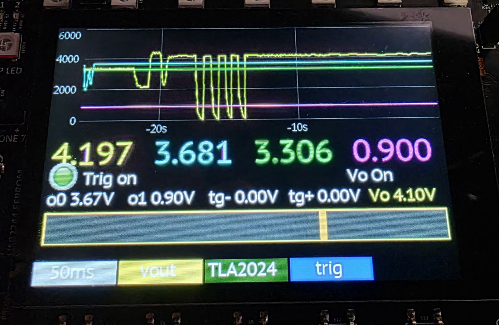

Analog I/O, 0–5 V
An op-amp front end lifts the RP2350’s native 3.3 V ADC range all the way to 0–5 V, giving four 500 kHz aggregate analog inputs that can directly interface with real-world sensors and signals without external level-shifting circuitry. The same inputs feed a TLA2024 programmable-gain amplifier (PGA) so that small differential signals — read from combinations of inputs — can be captured at up to 3.3 kHz, making low-level measurements practical in the field. Both ADCs have dedicated voltage reference hardware for getting the best accuracy.
The TLA2024’s PGA gives you real control over each of the four channels independently. Gain is selectable across six full-scale ranges — ±6.144 V, ±4.096 V, ±2.048 V, ±1.024 V, ±0.512 V, and ±0.256 V — so you can open the window wide for a large signal or zoom all the way in for maximum resolution on a small one. At that most sensitive ±0.256 V range, the 12-bit converter resolves roughly 125 µV (0.000125 V) per count. Each channel can be wired as a differential pair to reject common-mode noise and read the voltage between two pins (A0–A1, A0–A3, A1–A3, or A2–A3), or as a single-ended input referenced to ground (A0, A1, A2, or A3 vs GND). Because the input mux and range are set per channel, you can mix differential and single-ended measurements at different gains across all four channels at once. The common-mode range is 0–5.5 V, so differential signals must remain within this range.
Two analog outputs (from DAC63204) span 0 to ~4.84 V — nearly the full input range — with a 25 kHz update rate, fast enough for signal synthesis, DAC-driven control loops, and stimulus generation in analog test scenarios. The IO-voltage pin doubles as an analog trigger input, routed through the same analog front end and a window comparator, so external events can arm captures or fire interrupts without CPU polling.
The Logic Analyzer captures the native ADC signal alongside the digital signal at full aggregate rate (digital signals can be much faster). The Logic Analyzer supports triggering on any GPIO or internal pin. This includes the external analog trigger. The analog trigger is a programmable window comparator using the 3rd and 4th channels of the DAC.
High-speed opamps can draw significant current for a low-power device. Therefore, the Analog IO circuits have their own power zone, so they draw no power when not in use.

Key facts
- Inputs
- 4× 0–5 V, 500 kHz or 3.3 kHz
- Outputs
- 2× 0 to ~4.84 V @ 25 kHz
- PGA
- low differential @ 3.3 kHz
- Trigger
- window comparator